3. Cloud Pak for Watson AIOps
3.1. prerequisite
OpenShift cluster, you can request a cluster, see instruction to request Red Hat OpenShift .
3.2. Install CP4WA
Do refer to instruction on setting up a non HA starter CP4WA version for testing here.
IBMer and partner can request of an instance OpenShift cluster where you can install CP4WA for testing.
Do ensure you request the following
workers nodes x5 (16CPU x64GB)
if you intent to have ODF then you will need additional 3 workers.
Notes:
When you provisioned a OCP with ODF, the precheck used will failed for OCP registry check. To resolve this, you need to create a PVC and attach registry, see the documentation on how you can do this.
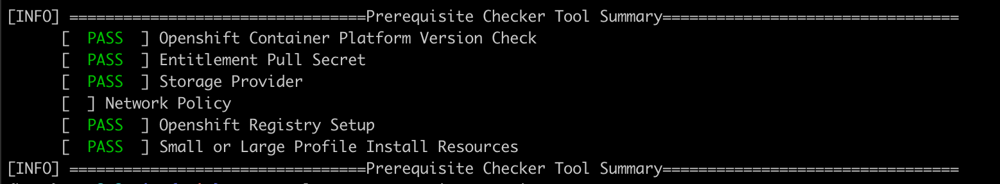3.3. Sample Connection in CP4WA
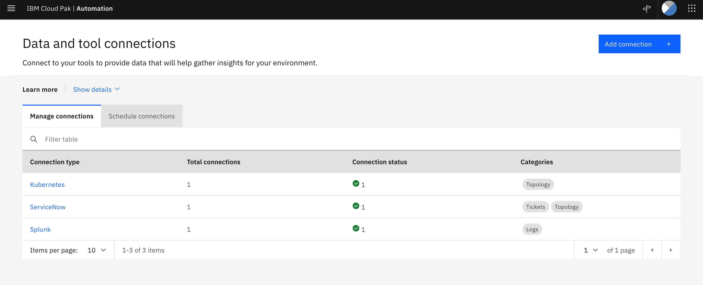3.4. Integrating to Splunk
To connect to Splunk you need to ensure Splunk REST API is enabled, the free trail version of Splunk Cloud REST API is disabled.
Splunk REST API is served by default at port 8089 over HTTPS.
Do refer to Splunk on how to install a Splunk Enterprise on OpenShift.
3.4.1. Add Connection: Splunk
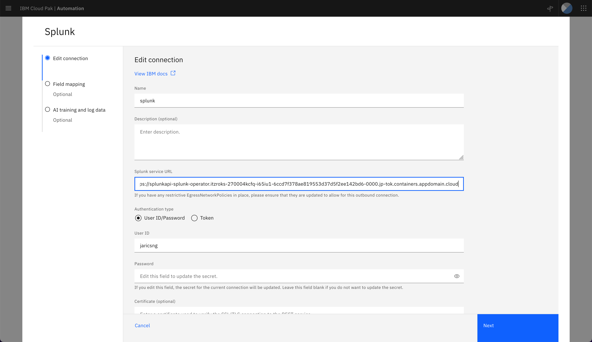 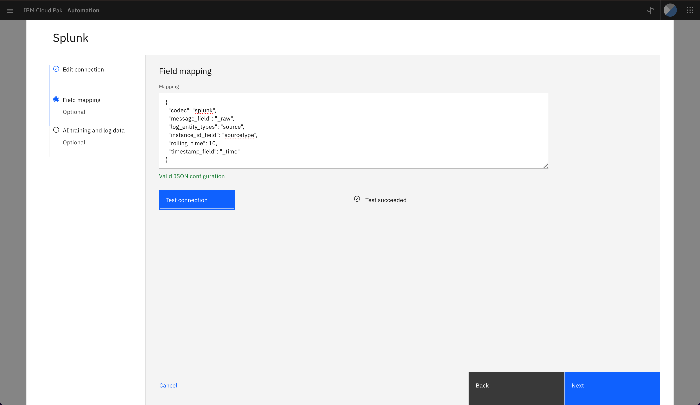 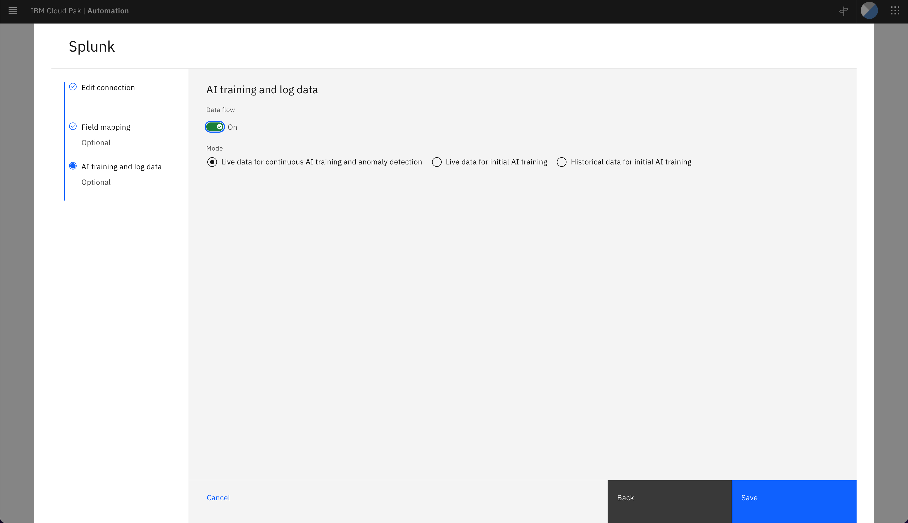3.5. Integrating to Kubernetes (CP4WA)
testing adding kubernetes connection, the following shows adding connection for a local OCP where CP4WA is hosted.
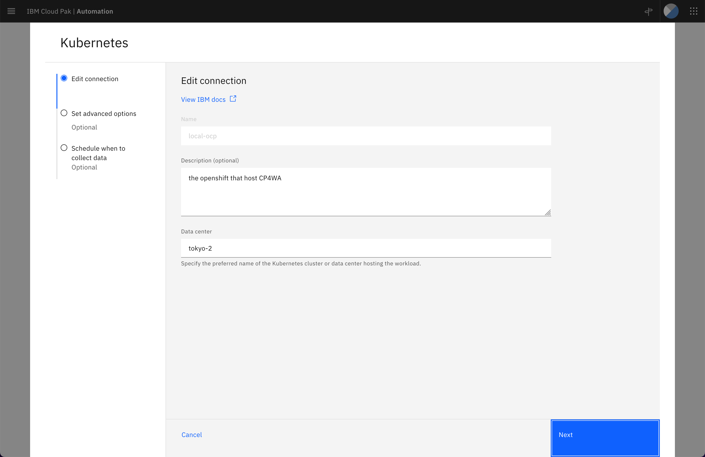 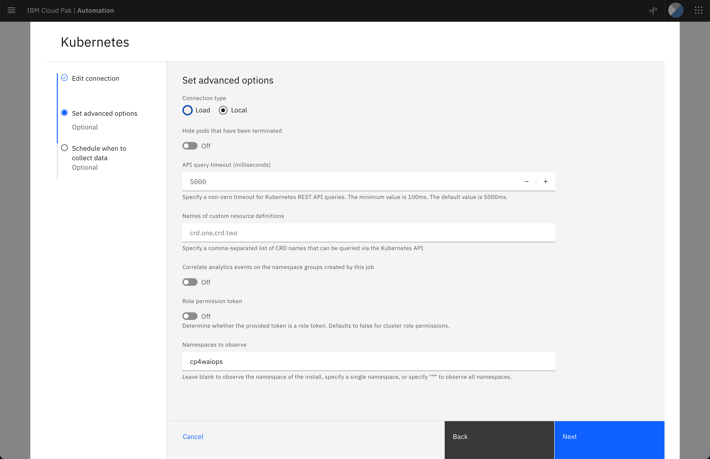 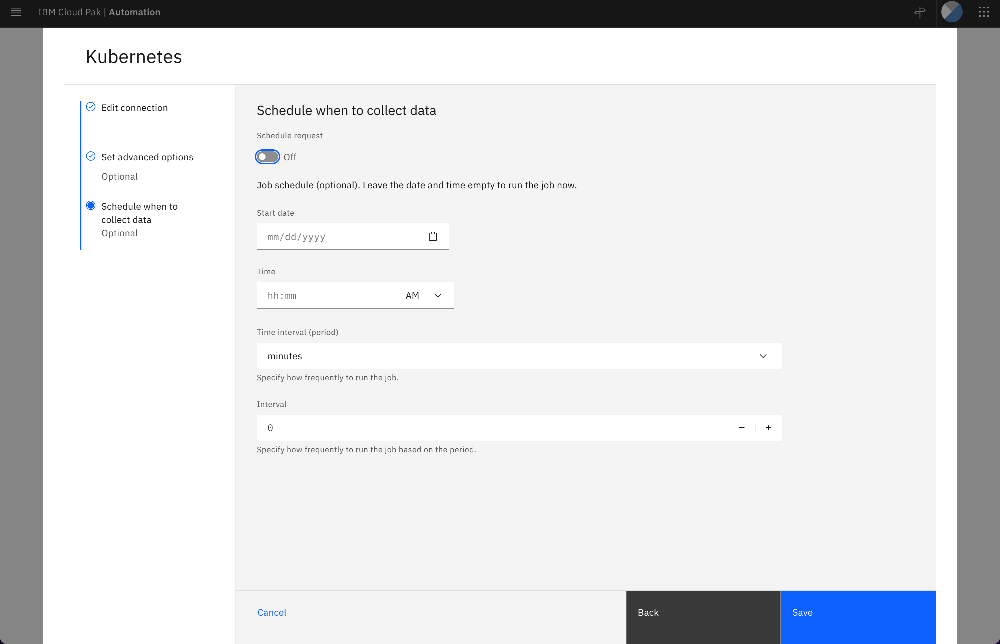3.6. Integrating to ServiceNow
To test this integration, you can provisioned a developer instance at ServiceNow.
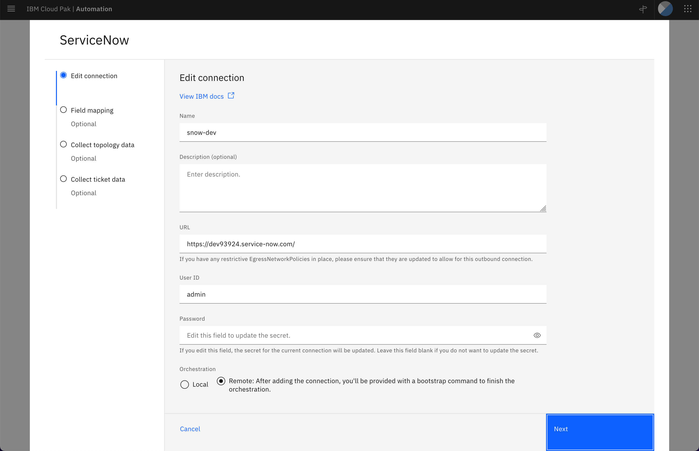 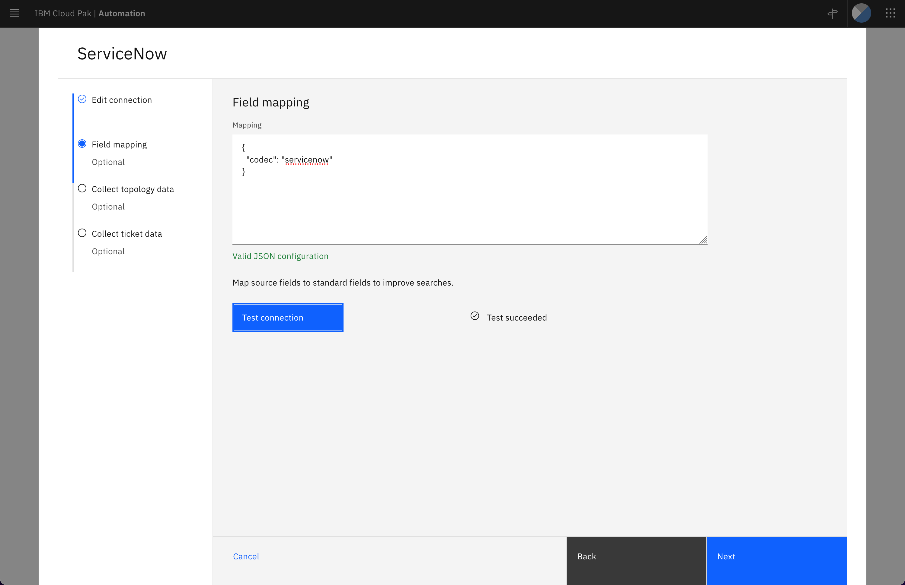 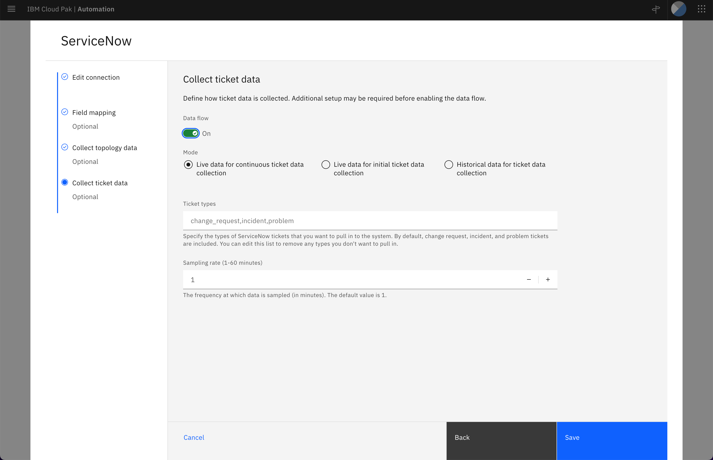